Getting Started¶
This section provides an overview on what PyTrajectory is and how to use it. For a more detailed view please have a look at the PyTrajectory Modules Reference.
What is PyTrajectory?¶
PyTrajectory is a Python library for the determination of the feed forward control to achieve a transition between desired states of a nonlinear control system.
Planning and designing of trajectories represents an important task in the control of technological processes. Here the problem is attributed on a multi-dimensional boundary value problem with free parameters. In general this problem can not be solved analytically. It is therefore resorted to the method of collocation in order to obtain a numerical approximation.
PyTrajectory allows a flexible implementation of various tasks and enables an easy implementation. It suffices to supply a function 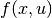 that represents the vectorfield of a control system and to specify the desired boundary values.
Installation¶
PyTrajectory has been developed and tested on Python 2.7
Dependencies¶
Before you install PyTrajectory make sure you have the following dependencies installed on your system.
numpy
sympy
scipy
- optional
- matplotlib [visualisation]
- ipython [debugging]
Usage¶
In order to illustrate the usage of PyTrajectory we consider the following simple example.
A pendulum mass 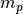 is connected by a massless rod of length  to a cart 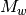
on which a force
to a cart 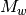
on which a force  acts to accelerate it.
acts to accelerate it.

A possible task would be the transfer between two angular positions of the pendulum. In this case, the pendulum should hang at first down (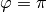) and is to be turned upwards (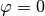). At the end of the process, the car should be at the same position and both the pendulum and the cart should be at rest. The (partial linearised) system is represented by the following differential equations, where 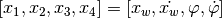 and 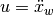 is our control variable:
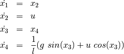
To solve this problem we first have to define a function that returns the vectorfield of
the system above. Therefor it is important that you use SymPy functions if necessary, which is
the case here with  and
and  .
.
So in Python this would be
>>> from sympy import sin, cos
>>>
>>> def f(x,u):
... x1, x2, x3, x4 = x # system variables
... u1, = u # input variable
...
... l = 0.5 # length of the pendulum
... g = 9.81 # gravitational acceleration
...
... # this is the vectorfield
... ff = [ x2,
... u1,
... x4,
... (1/l)*(g*sin(x3)+u1*cos(x3))]
...
... return ff
...
>>>
Wanted is now the course for 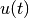, which transforms the system with the following start
and end states within ![T = 2 [s]](../_images/math/48ac522661f248b225e21d35d8eb668d3cd75a73.png) .
.
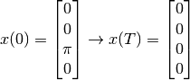
so we have to specify the boundary values at the beginning
>>> from numpy import pi
>>>
>>> a = 0.0
>>> xa = [0.0, 0.0, pi, 0.0]
and end
>>> b = 2.0
>>> xb = [0.0, 0.0, 0.0, 0.0]
The boundary values for the input variable are
>>> uab = [0.0, 0.0]
because we want  .
.
Now we import all we need from PyTrajectory
>>> from pytrajectory import Trajectory
and pass our parameters.
>>> T = Trajectory(f, a, b, xa, xb, uab)
All we have to do now to solve our problem is
>>> x, u = T.startIteration()
After the iteration has finished x(t) and u(t) are returned as callable functions for the system and input variables, where t has to be in (a,b).
In this example we get a solution that satisfies the default tolerance
for the boundary values of  after the 7th iteration step
with 320 spline parts. But PyTrajectory enables you to improve its
performance by altering some of its method parameters.
after the 7th iteration step
with 320 spline parts. But PyTrajectory enables you to improve its
performance by altering some of its method parameters.
For example if we increase the factor for raising the spline parts (default: 2)
>>> T.setParam('kx', 5)
and don’t take advantage of the system structure (integrator chains)
>>> T.setParam('use_chains', False)
we get a solution after 3 steps with 125 spline parts.
There are more method parameters you can change to speed things up, i.e. the type of collocation points to use or the number of spline parts for the input variables. To do so, just type:
>>> T.setParam('<param>', <value>)
Please have a look at the PyTrajectory Modules Reference for more information.
Visualisation¶
Beyond the simple plot() method (see: PyTrajectory Modules Reference) PyTrajectory offers basic capabilities to animate the given system. This is done via the Animation class from the utilities module. To explain this feature we take a look at the example above.
When instanciated, the Animation requires the calculated simulation results T.sim and a callable function that draws an image of the system according to given simulation data.
First we import what we need by:
>>> import matplotlib as mpl
>>> from pytrajectory.utilities import Animation
Then we define our function that takes simulation data x of a specific time and an instance image of Animation.Image which is just a container for the image. In the considered example xt is of the form
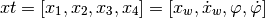
and image is just a container for the drawn image.
def draw(xt, image):
# to draw the image we just need the translation `x` of the
# cart and the deflection angle `phi` of the pendulum.
x = xt[0]
phi = xt[2]
# next we set some parameters
car_width = 0.05
car_heigth = 0.02
rod_length = 0.5
pendulum_size = 0.015
# then we determine the current state of the system
# according to the given simulation data
x_car = x
y_car = 0
x_pendulum = -rod_length * sin(phi) + x_car
y_pendulum = rod_length * cos(phi)
# now we can build the image
# the pendulum will be represented by a black circle with
# center: (x_pendulum, y_pendulum) and radius `pendulum_size
pendulum = mpl.patches.Circle(xy=(x_pendulum, y_pendulum), radius=pendulum_size, color='black')
# the cart will be represented by a grey rectangle with
# lower left: (x_car - 0.5 * car_width, y_car - car_heigth)
# width: car_width
# height: car_height
car = mpl.patches.Rectangle((x_car-0.5*car_width, y_car-car_heigth), car_width, car_heigth,
fill=True, facecolor='grey', linewidth=2.0)
# the joint will also be a black circle with
# center: (x_car, 0)
# radius: 0.005
joint = mpl.patches.Circle((x_car,0), 0.005, color='black')
# and the pendulum rod will just by a line connecting the cart and the pendulum
rod = mpl.lines.Line2D([x_car,x_pendulum], [y_car,y_pendulum],
color='black', zorder=1, linewidth=2.0)
# finally we add the patches and line to the image
image.patches.append(pendulum)
image.patches.append(car)
image.patches.append(joint)
image.lines.append(rod)
# and return the image
return image
# now we can create an instance of the `Animation` class
# with our draw function and the simulation results
A = Animation(drawfnc=draw, simdata=T.sim)
# as for now we have to explicitly set the limits of the figure
# (may involves some trial and error)
A.set_limits(xlim=(-1.2,0.3), ylim=(-0.6,0.6))
# if everything is set, we can start the animation
# (might take some while)
A.animate()
# then we can save the animation as a `mp4` video file or as an animated `gif` file
A.save('simple_example.mp4')